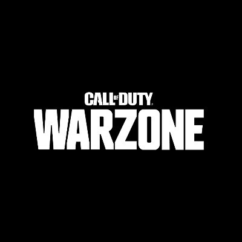

Osu! is a free-to-play rhythm game primarily developed, published, and created by Dean "peppy" Herbert. Inspired by iNiS' rhythm game Osu! Tatakae! Ouendan, it was written in C# on the .NET Framework, and was released for Microsoft Windows on 16 September 2007.

Call of Duty: Warzone is a free-to-play battle royale video game released on March 10, 2020, for PlayStation 4, Xbox One, and Microsoft Windows.
Valorant is a team-based first-person hero shooter set in the near future. Players play as one of a set of Agents, characters based on several countries and cultures around the world. In the main game mode, players are assigned to either the attacking or defending team with each team having five players on it.